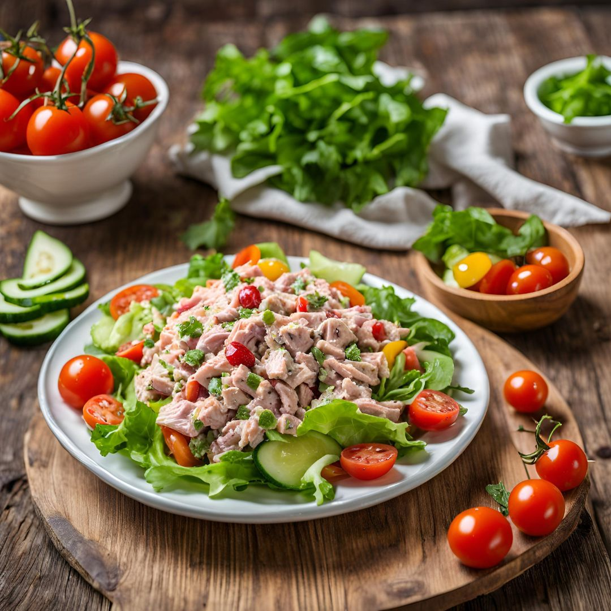

Ensalada de atún
Fresca y fácil de preparar, perfecta para la noche.
Ingredientes:
- 1 lata de atún en agua
- 1/2 lechuga en trozos
- 1/2 taza de maíz
- 1/2 tomate picado
- Aceite de oliva y sal al gusto
Preparación:
- Mezcla todos los ingredientes en un bol.
- Aliña con aceite de oliva y sal al gusto.
- Sirve frío y disfruta.